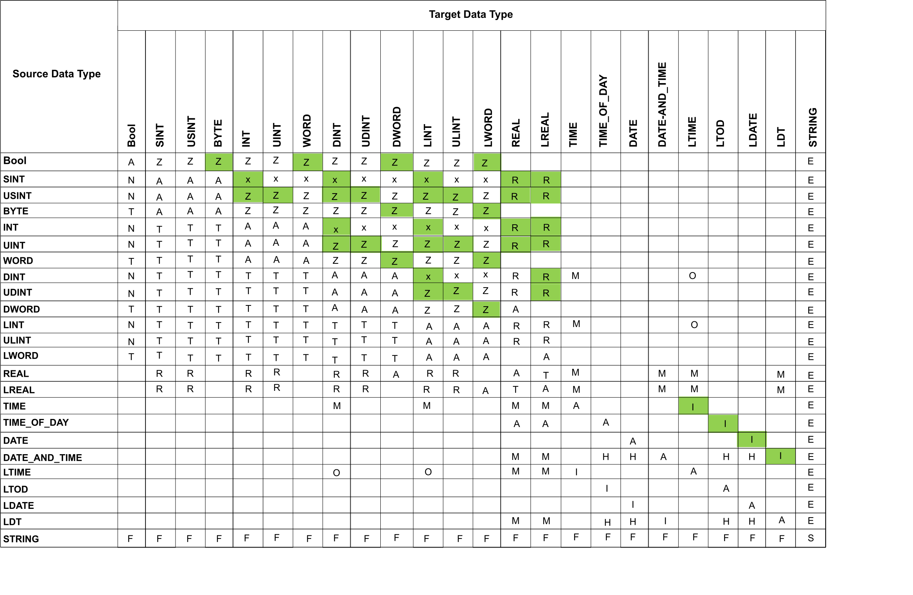

For explicit data conversion the type conversion is explicitly formulated in the program code.
With data conversion from a high-order to a low-order data type information loss has to be expected. The bigger value range will be truncated. This can lead to smaller or even to totally different values.

Data conversion of the cells, which are highlighted in color, can also be executed implicitly. For empty cells of the table there is no conversion implemented.
A: Simple assignment (bitwise) between Operands of equal size. If Operands are of different type then source and target operands may end up with different values.
E: Conversions to String results in an external representation of zero (0) for TRUE and one (1) for FALSE. Further on a conversion of the given data type basically will result in an external representation WITHOUT a type specific prefix (e.g. TIME#). The external representation includes NO apostrophes, that means, only the content of the source data operand without any additions will be passed to the target operand. Exception: Bit Strings are converted to a hexadecimal number that includes the radix prefix (16#).
F: Conversions from String to a given data type are achieved when the string is clearly defined by a type specific prefix or when the syntax of the string clearly defines the type (Examples: STRING_TO_TIME_OF_DAY: 11:12:13 → TOD#11:12:13; STRING_TO_TIME: 2d5m → TIME#2d0h5m0s0ms).
Additional user convenience extensions:
STRING_TO_BOOL(S): considers TRUE, True, true, T, t to be a valid external representations of TRUE. Strings, containing integer numbers, are converted to its binary value and then converted to boolean, using rule as described at item N. This is consistent with ANY_NUM to BOOL conversions. Everything else converts to FALSE.
STRING_TO_ANY_INT/BIT: by default integer base 10 numbers are converted to the specified data type. Additionally base 10 numbers may have a negative sign, unsigned numbers may have a radix prefix (2#, 8# or 16#) and all numbers may have embedded underscore characters (_). This format complies with standard IEC 61131 number syntax rules.
STRING_TO_ANY_REAL: the mantissa may have underscore characters (_) embedded.
G: (intentionally omitted).
H: Date conversions are implemented in the following manner:
Data type conversion of date and time types:
|
Description |
Comment |
|---|---|
|
DT_TO_DATE |
Converts only the contained date, a value range detected error gives an implementer specific result. |
|
DT_TO_TOD |
Converts only the contained time of day, a value range detected error gives an implementer specific result. |
M: Number values are considered to contain milliseconds when conversion to or from time variables take place.
N: The target operand of type BOOL will be set to FALSE if the source operand is zero and to TRUE if the source operand is not equal zero.
O: This value contains Nanoseconds, and a conversion is done accordingly either from ns to DINT/LINT or from DINT/LINT to a ns based time.
R: Conversions to real types may lose precision and conversions from real types may suffer truncation.
The standard specifies that conversions from ANY_REAL_TO_ANY_INT will round according to the convention of IEC 60559, according to which, if the two nearest integers are equally near, the result shall be the nearest even integer. Roundings are implemented according to IEC 60559.
S: Assignment between strings of possibly different length may cause truncation. An ERR_RT_TRUNCATION detected error is written into the message log and the destination string will receive as many characters as it can possibly hold.
T: The source operand will be truncated to match the target operands size. The most significant bits of the source operand get lost. Range checking is not implemented.
X: The source operand will be sign extended to match the target operands size.
Z: The source operand will be zero extended to match the target operands size.